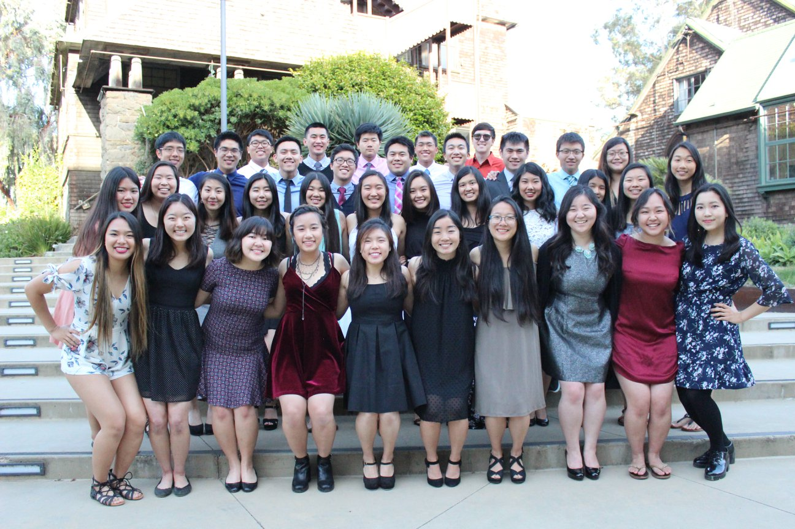

Mission Statement
The mission of Asian American Christian Fellowship (AACF) is to
reach into the university and collegiate community, primarily to
those who are Asian Pacific Americans, with the life-changing message
of Jesus Christ.
Vision
We are committed to making disciples by educating and equipping
students in biblical foundations, Christian disciplines, and the
development of spiritual gifts in order to prepare them for witness
and service on the campus, in the local church, in the marketplace,
and in world missions.
Statement of Faith
Asian American Christian Fellowship (AACF) as the campus ministry division of JEMS, believes:
- That the Bible is God’s Word, written by men divinely and uniquely
inspired by the Holy Spirit, and that it is the supreme and final
authority in all matters of faith and conduct.
- In One God, eternally existing in three persons: Father, Son and
Holy Spirit.
- In Jesus Christ, the world’s only Savior; in His pre-existence,
virgin birth, sinless life, vicarious death, burial, and bodily
resurrection and personal return.
- In the Holy Spirit as a Person, indwelling and empowering the
believer, convicting the unsaved and presenting the claims of Christ.
- That sinful man is lost and can be redeemed only by the death and
shed blood of Christ upon the cross through the regeneration of the Holy Spirit.
- In the resurrection of the dead, the believer to life everlasting
and the unbeliever to eternal condemnation.
- That the Church, the Body of Christ, is comprised of all who have
accepted the redemption provided by Christ.
What is JEMS?
Since 1950, the
Japanese
Evangelical Missionary Society (JEMS) has been
blessed by God to expand and include many faceted ministries that span
the globe today. By the nature of its multi-faceted ministry and outreach
into the world which is becoming increasingly multi and inter-racial, JEMS
has expanded beyond just the Japanese and Japanese Americans. JEMS
ministries now includes other Asian Americans. We are being enriched
and empowered to be more effective for doing the work of evangelism,
discipleship, teaching the Word, training, equipping, unifying the
believers and churches.
JEMS began its campus work in the Fall of 1973 at Cal State Los Angeles.
By 1977, the name Asian American Christian Fellowship came into being
for the group at Cal State Long Beach. From a small beginning, this
ministry has grown to involve several thousand students on a number of
strategic campuses.